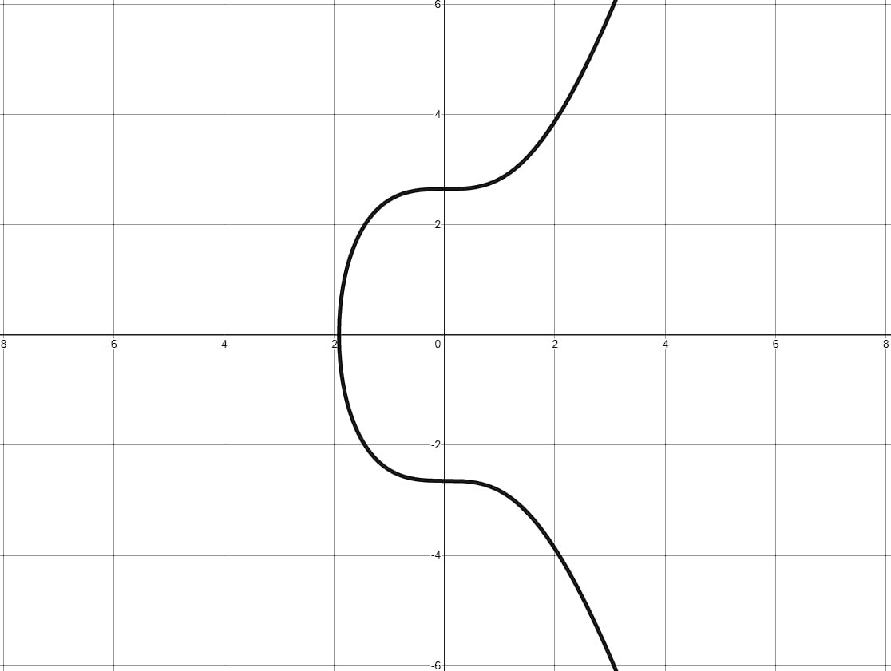
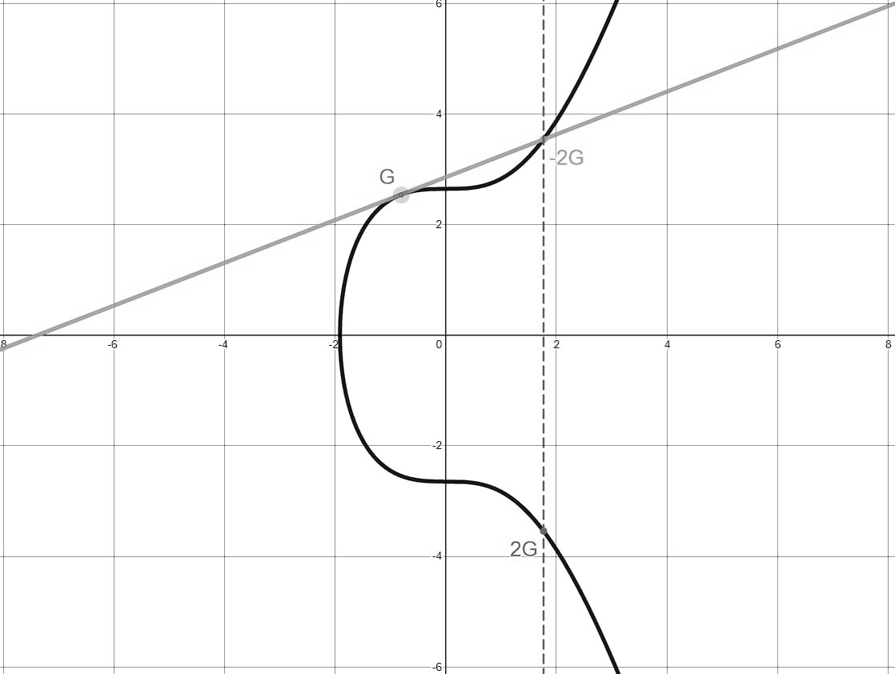

7 La valeur de l’information
Bitcoin est un concept de monnaie numérique libre. En tant que tel, il doit garantir la propriété des unités de compte sans nécessiter d’identification auprès d’un tiers de confiance. Il repose pour cela sur un algorithme de signature numérique qui permet d’autoriser une transaction grâce à la connaissance d’une information, la clé privée.
Pour la première fois dans l’histoire de l’humanité, Bitcoin rend ainsi possible la possession souveraine d’un bien numérique rival, c’est-à-dire de quelque chose qui ne puisse pas simplement être copiée. Puisque cette possession est exercée par la connaissance exclusive des clés privées, l’information possède plus que jamais de la valeur. Il en découle un certain nombre de conséquences qui diffère du modèle traditionnel de la propriété.
Dans ce chapitre technique, nous verrons comment les données sont représentées au sein de Bitcoin, comment la cryptographie et la signature numérique interviennent, ce qu’est le hachage. Puis, nous décrirons comment est réalisée la génération des clés et des adresses, ce que sont les portefeuilles et comment ils se structurent. Nous examinerons enfin les conséquences de ce modèle, à commencer par la responsabilité conférée au gardien des clés.
La représentation des données
En informatique, une information est un ensemble de données stockées sur un support matériel. Elle est communément représentée sous forme de chiffres binaires (appelés bits par contraction de l’anglais binary digits), pour refléter le fonctionnement de l’électronique numérique utilisée dans les ordinateurs. Les deux valeurs possibles (0 et 1) correspondent en effet à deux états électriques distincts, comme par exemple la présence ou l’absence de courant.
Dans ce contexte, l’information est essentiellement un nombre. Même si elle prend l’allure d’un contenu multimédia, une information doit être encodée pour être traitée et interprétée par les ordinateurs. Typiquement, l’encodage1 d’un texte pourra se faire en ASCII ou en UTF-8, celui d’une image en JPEG ou en PNG, celui d’une musique en MP3 ou en FLAC et celui d’une vidéo en MPEG ou en H.264. De cette façon, tout se ramène aux nombres.
1 Le mot « codage » est également largement utilisé en français.
Dans notre monde moderne occidental, nous avons pour habitude de représenter les nombres au moyen d’un système de numération à 10 chiffres, fondé sur la base 10. Il s’agit d’une convention, liée au fait que nous avons longtemps compté avec nos 10 doigts. Mais ce système décimal n’est pas le seul qui existe, et l’informatique fait usage de plusieurs autres bases.
Tout d’abord, comme on l’a dit, les ordinateurs sont basés sur un système binaire, composé de deux chiffres (le 0 et le 1). Ces deux chiffres sont donc utilisés pour écrire les nombres : 0, 1, 10, 11, 100, etc. Dans ce système, le nombre 21 (base 10) s’exprime comme suit :
\[21 = 16 + 4 + 1 = \mathbf{1} \times 2^4 + \mathbf{0} \times 2^3 + \mathbf{1} \times 2^2 + \mathbf{0} \times 2^1 + \mathbf{1} \times 2^0 = \mathtt{0b10101}\]
Le préfixe 0b est usuellement placé avant le nombre pour indiquer que ce dernier est exprimé en binaire.
Un autre système de numération communément utilisé en informatique est le système hexadécimal, qui est composé de 16 chiffres, symbolisés par les 10 chiffres arabes et les 6 premières lettres de l’alphabet latin :
0123456789abcdefDans cette base, le « a » représente le nombre 10, le « b » 11, etc. jusqu’au « f » qui représente le 15.
Le système hexadécimal permet de condenser la représentation des données. En particulier, il est très adapté pour écrire les octets (appelés bytes en anglais), qui sont des ensembles de 8 bits, et qui peuvent être symbolisés par 2 caractères hexadécimaux. De cette manière, le nombre 2008 (base 10) s’écrit :
\[2008 = 1792 + 208 + 8 = 7 \times 16^2 + 13 \times 16^1 + 8 \times 16^0 = \mathtt{0x7d8}\]
On place usuellement le préfixe 0x avant le nombre pour indiquer qu’on utilise le système hexadécimal.
Dans Bitcoin, deux bases de numération supplémentaires interviennent, notamment pour représenter certaines informations capitales, comme les clés privées et les adresses. La première est la base 58. Dans ce système à 58 chiffres, les nombres sont écrits en utilisant tous les caractères alphanumériques (chiffres arabes, lettres latines minuscules, lettres latines majuscules) à l’exception des caractères 0 (zéro), O (o majuscule), l (L minuscule) et I (i majuscule), qui peuvent être confondus entre eux et constituer une source d’erreur. Les chiffres de cette base sont donc, dans l’ordre :
123456789ABCDEFGHJKLMNPQRSTUVWXYZabcdefghijkmnopqrstuvwxyzLe seconde est la base 32, moins compacte mais plus adaptée pour les codes QR. Les symboles utilisés dans cette base sont les chiffres arabes et les lettres latines minuscules, auxquels on retranche le 1, le b, le i et le o pour éviter les confusions, à savoir les caractères suivants :
qpzry9x8gf2tvdw0s3jn54khce6mua7lCes systèmes d’encodage permettent de représenter l’information de manière brute. Cependant, elle peut également être encodée dans un format particulier incluant une somme de contrôle. Une somme de contrôle (checksum) est une courte séquence de données numériques calculée à partir d’un ensemble de données plus important permettant de vérifier, avec une très haute probabilité, que l’intégrité de cet ensemble a été préservée lors d’une opération de copie, de stockage ou de transmission. Celle-ci est généralement placée après l’information pour que le tout soit ensuite représenté dans la base adéquate.
Dans le cas de Bitcoin, la somme de contrôle est essentielle pour transmettre les informations sensibles, comme les clés privées et les adresses, afin qu’une faute de frappe soit détectée immédiatement. Les trois encodages qui mettent en œuvre ce type de somme de contrôle dans BTC sont les formats Base58Check, Bech32 et Bech32m. Le premier a été mis en place par Satoshi dès les débuts de la cryptomonnaie et consiste à calculer une somme de contrôle grâce à l’empreinte cryptographique tronquée de l’information. Il concerne les clés privées et les adresses dites « traditionnelles », comme par exemple l’adresse ``.
Les deux autres ont vu le jour en 2017 et en 2021 (respectivement). Ils font intervenir des sommes de contrôle par code BCH (Bose–Chaudhuri–Hocquenghem), qui permettent non seulement de détecter la présence d’erreurs de frappe mais aussi de les localiser2. Ces formats servent à encoder (respectivement) les adresses natives de SegWit, comme par exemple , et les clés publiques utilisées dans Taproot, telle que. Le format Bech32 est également utilisé pour encoder les demandes de paiement sur le réseau Lightning.
2 « de détecter la présence d’erreurs de frappe mais aussi de les localiser » : Samuel Dobson, (Some of) the math behind Bech32 addresses, 2 septembre 2019 : https://medium.com/@meshcollider/some-of-the-math-behind-bech32-addresses-cf03c7496285.
La cryptographie et Bitcoin
La cryptographie est la discipline mathématique qui a pour but la sécurisation de la communication en présence de tiers malveillants. Elle avait pour rôle initial de dissimuler de l’information grâce au chiffrement, mais s’est par la suite étendue à l’authentification de l’auteur d’un message (grâce à la cryptographie asymétrique) et à la vérification de données (grâce aux fonctions à sens unique). Aujourd’hui, la cryptographie permet donc d’assurer la confidentialité (chiffrement), l’authenticité (signature) et l’intégrité (hachage) de l’information transmise.
Bitcoin est un produit cryptographique. D’un point de vue technique, il repose sur des méthodes développées dans les dernières décennies du xx siècle, comme les arbres de Merkle ou la preuve de travail. D’un point de vue idéologique, il est issu du mouvement cypherpunk, qui préconisait une utilisation proactive de la cryptographie pour sauvegarder la confidentialité et la liberté des individus sur Internet. C’est dans ce double sens qu’on le désigne comme une cryptomonnaie.
Dans le contexte de Bitcoin, le chiffrement peut être utile pour protéger les clés privées ou pour envoyer des messages à d’autres utilisateurs. Dans de nombreux portefeuilles, il est courant que les clés privées soient chiffrées à l’aide d’un mot de passe (clé secrète) pour éviter qu’une personne malveillante ayant accès à l’appareil puisse dépenser les fonds. Dans Electrum par exemple, les clés privées sont chiffrées par le biais de l’algorithme symétrique AES-256-CBC3.
3 « Dans Electrum par exemple, les clés privées sont chiffrées par le biais de l’algorithme symétrique AES-256-CBC » : Electrum Documentation, Frequently Asked Questions, 3 octobre 2021 : https://electrum.readthedocs.io/en/latest/faq.html#how-is-the-wallet-encrypted.
Néanmoins, contrairement à ce qu’on imagine parfois, aucun chiffrement n’est impliqué directement dans le protocole de Bitcoin : toutes les données sont publiques en raison du fonctionnement ouvert et sans autorisation du système. Bitcoin n’est pas un produit cryptographique parce que les transactions seraient chiffrées (elles ne le sont pas), mais parce qu’il repose sur les deux autres fonctions de la cryptographie : l’authentification grâce à la signature numérique et la vérification des données avec le hachage. La signature numérique permet d’authentifier la personne à l’origine d’une transaction pour assurer au réseau qu’il s’agit du propriétaire des bitcoins dépensés. Le hachage intervient lui dans la dérivation des clés et des adresses, dans la construction des blocs et dans le fonctionnement du minage.
La signature numérique
Bitcoin étant conçu pour l’échange de valeur, il repose de manière centrale sur les transactions. Celles-ci sont dans la plupart des cas des transferts d’unités entre deux propriétaires, même si elles peuvent prendre des formes beaucoup plus complexes comme nous le verrons dans le chapitre 12. L’unité transférée est usuellement le satoshi, qui forme la plus petite unité (indivisible) gérée par le protocole et qui correspond à un cent-millionième de bitcoin : 1 satoshi = 0,00000001 bitcoin. Elle a été nommée comme telle en hommage au créateur de Bitcoin, Satoshi Nakamoto4.
4 Le terme satoshi a été initialement proposé par ribuck sur le forum de Bitcoin, d’abord en novembre 2010 pour désigner 0,01 bitcoin, puis en février 2011 pour nommer la plus petite unité. L’appellation a ensuite été adoptée par la communauté. – ribuck, Re: How did “satoshi” become the name of the base unit?, /01/2014 20:49:00 UTC : https://bitcointalk.org/index.php?topic=407442.msg4415850#msg4415850.
Dans le protocole, la signature numérique est utilisée pour autoriser ces mouvements de fonds. Comme nous l’avons décrit dans le chapitre 5, ce procédé se base sur une paire de clés : une clé privée, secrète, qui signe le message, et une clé publique, connue de tous, qui permet de vérifier la signature produite. Dans le cas d’un transfert simple, le message à signer est la transaction et le signataire du message est le propriétaire des satoshis à envoyer.
L’algorithme de signature produit une signature différente pour chaque transaction. Il ne s’agit pas de se contenter de révéler un secret pour effectuer une dépense, auquel cas tout le monde sur le réseau pourrait tenter de dépenser les fonds, mais bien de produire une donnée qui puisse ensuite être vérifiée par le réseau conformément à ce qui est attendu.
Ce fonctionnement confère un rôle fondamental à la clé privée. Tout individu la connaissant peut accéder aux fonds qu’elle protège et s’en emparer. C’est pourquoi elle doit rester absolument secrète : car celui qui la connaît devient le propriétaire de facto des bitcoins concernés.
L’algorithme principal utilisé dans Bitcoin est ECDSA (Elliptic Curve Digital Signature Algorithm), une variante de DSA utilisant la cryptographie sur courbes elliptiques. L’algorithme fait appel à des notions d’algèbre complexes, mais on peut tenter d’en expliquer brièvement le fonctionnement.
La variante d’ECDSA utilisée dans Bitcoin se base sur la courbe elliptique secp256k15, qui sert à dériver la clé publique de la clé privée, à signer les transactions grâce à la clé privée et à vérifier les signatures à l’aide de la clé publique. L’équation mathématique de cette courbe est \(y^2 = x^3 + 7\) dont les coordonnées \(x\) et \(y\) évoluent dans le corps fini des nombres entiers modulo \(p\), où \(p\) est un nombre premier spécifique6 inférieur à \(2^{256}\).
5 Le nom secp256k1 est un peu barbare, mais chaque lettre à une importance. Le sigle SEC désigne Standards for Efficient Cryptography, l’ouvrage dont elle est issue (https://www.secg.org/SEC2-Ver-1.0.pdf). Le P-256 indique que le nombre premier \(p\) utilisé est encodé sur 256 bits. Le k indique qu’il s’agit d’une courbe de Koblitz : les paramètres sont choisis pour rendre les opérations plus efficaces, et n’ont donc pas été sélectionnés aléatoirement (r). Le 1 désigne l’index de la courbe par rapport aux autres courbes similaires.
6 Le nombre premier choisi pour secp256k1 est : \(p = 2^{256} - 2^{32} - 2^9 - 2^8 - 2^7 - 2^6 - 2^4 - 1\).

Une addition est définie sur cette courbe pour faire en sorte que la somme de deux points soit également un point de la courbe7. La multiplication par un scalaire est définie comme étant le fait d’additionner le même point à plusieurs reprises : \(m~P = P + \ldots + P~(m~\mathrm{fois})\). En fixant un point sur la courbe, appelé point de base et noté \(G\)8, on peut définir une opération transformant un entier \(d\) en un point de la courbe : \(Q = d~G\).
7 L’addition est définie par \(P + Q = R\) où \(x_R = \lambda_{P,Q}^2 - x_P - x_Q \pmod p\) et \(y_R = \lambda_{P,Q}~( x_P - x_R ) - y_P \pmod p\) avec \(\lambda_{P,Q} = \{ \frac{3 x_P^2}{2 y_P} \pmod p~\mathrm{si}~P = Q~; \frac{y_Q - y_P}{x_Q - x_P} \pmod p~\mathrm{sinon} \}\).
8 Le point de base de secp256k1 est : $$\begin{aligned}
Ces opérations peuvent être représentées géométriquement sur la courbe. Par exemple, l’équivalent géométrique du doublement du point \(G\) (addition avec lui-même) consiste à tracer la tangente du point, à considérer l’intersection de cette tangente avec la courbe et à en prendre l’opposé, comme représenté sur la figure 7.2. Toutes ces opérations sont non réversibles.

En choisissant une clé privée \(k\), on peut ainsi calculer la clé publique \(K\) qui est \(K = k~G\). Puisque la multiplication par un scalaire est non réversible, le passage de la clé privée à la clé publique constitue une fonction à sens unique. En d’autres termes, il est en pratique impossible de retrouver la clé publique à partir de la clé privée sans essayer chaque possibilité une à une.
Regardons ce que cela donne en pratique. La clé privée est un nombre choisi aléatoirement. Elle doit être comprise entre \(1\) et \(n - 1\) où \(n\) est l’ordre du point \(G\) (qui approche \(2^{256}\)) :
\[n = \mathtt{0xfffffffffffffffffffffffffffffffebaaedce6af48a03bbfd25e8cd0364141}\]
Par exemple, le nombre héxadécimal suivant est tout à fait valide pour servir de clé privée :
\[k = \mathtt{0x999bb87eea489b2fc6219226e7b95d9083a3b627246ea852e85567ac4d72444f}\]
La clé publique est un point de la courbe défini par \(K = k~G\). Si l’on calcule ce point à partir de la clé privée précédente, on obtient :
\[\begin{aligned} K = &~(~\mathtt{0xf6a6c7c39c88b767bfac4ac687c3ff32372e76c9fb633e2278e54472e300b3bd}, \\ &~\mathtt{0x5822f24e0fdb4e568f97a7fff246c07ba486c1756f82971765cc9cf8e45ff5e6}~)\end{aligned}\]
Dans Bitcoin, cette clé publique est représentée de manière sérialisée. Elle peut l’être sous forme non compressée, auquel cas elle est précédée par le préfixe 0x04. Dans notre cas, son expression sérialisée est :
04 f6a6c7c39c88b767bfac4ac687c3ff32372e76c9fb633e2278e54472e300b3bd
5822f24e0fdb4e568f97a7fff246c07ba486c1756f82971765cc9cf8e45ff5e6Il existe également une représentation compressée de la clé publique. Celle-ci est rendu possible par la symétrie de la courbe par rapport à l’axe des abscisses : car en effet, le fait que le point \((x, y)\) appartienne à la courbe implique que le point \((x, - y)\) y soit aussi. Pour compresser l’information, il suffit ainsi de donner l’abcisse \(x\) et un préfixe qui vaut 0x02 si \(y\) est pair ou 0x03 si \(y\) est impair9. On peut ensuite retrouver grâce à l’équation de la courbe. Dans notre cas, la clé publique compressée est :
9 Dans le corps fini \(\mathbb{F}_p\), prendre l’opposé d’un élément non nul \(y\) inverse sa polarité. En effet, si \(y \in [\![ 1, p - 1 ]\!]\), alors \(-y + p \in [\![ 1, p - 1 ]\!]\).
02 f6a6c7c39c88b767bfac4ac687c3ff32372e76c9fb633e2278e54472e300b3bdCe format permet de réduire la taille des transactions (et donc les frais) : c’est pour cela qu’il est utilisé dans la plupart des portefeuilles récents, et qu’il est imposé dans le cas de SegWit. Le format non compressé tend ainsi à disparaître, même s’il reste toujours valide dans les transactions classiques.
Dans Bitcoin, la clé publique servait initialement à recevoir les fonds directement (« Pay to Public Key »), de sorte qu’on la confond encore aujourd’hui avec la notion d’adresse. Toutefois, c’est son empreinte obtenue par hachage (« Pay to Public Key Hash »), qui sert généralement d’adresse de réception, comme nous le décrirons plus bas.
L’algorithme de signature ECDSA s’applique à un message \(m\) qui est précédemment haché et produit une signature \((r, s)\). Il est ensuite possible de faire correspondre la signature avec la clé publique \(K\) grâce à un algorithme de vérification qui ne nécessite pas de connaître la clé \(k\)10.
10 L’algorithme de signature ECDSA est le suivant. En notant \(H(m)\) l’empreinte cryptographique du message à signer, la signature est obtenue en appliquant les étapes suivantes :
11 Il s’agit de la signature de la transaction d’identifiant . Sous forme sérialisée (DER), cette signature est.
Dans Bitcoin, le message est la transaction. L’agorithme de vérification montre ainsi que la personne qui a produit la signature connaît \(k\) tel que \(K = k~G\), c’est-à-dire qu’elle est propriétaire des bitcoins. C’est ce qui permet aux nœuds du réseau de s’assurer de la validité des signatures, et par conséquent de celle de la transaction. Un exemple de signature correspondant à notre clé publique et à une transaction réalisée sur le réseau principal est11 :
\[\begin{aligned} (r, s) = &~(~\mathtt{0x19b83a5e354ef62e98413e6ef3f37ad0c69f75cea7daa6a352cf66f4668a9a0b}, \\ &~\mathtt{0x4c13f9b6f2c8ea7af224b3f6a3d9cfdfe5085bbafa150fb1aa72a20ce7cac6b0}~)\end{aligned}\]
Notez que l’algorithme ECDSA présenté ici n’est pas le seul qui existe. En novembre 2021, BTC a intégré un autre algorithme, le schéma de signature numérique de Schnorr, qui est basé sur la même courbe elliptique mais qui apporte des bénéfices majeurs. Certaines autres variantes de Bitcoin comme Monero utilisent EdDSA, un algorithme de signature basée sur une courbe d’Edwards tordue.
Le hachage
Bitcoin fait également usage du hachage. Le hachage est un procédé cryptographique permettant de garantir l’intégrité d’une information numérique. Le nom de ce procédé est issu d’une analogie avec la cuisine, où des aliments peuvent être coupés en petits morceaux et regroupés dans un hachis. Il est mis en œuvre par une fonction de hachage qui transforme un message de taille variable en une empreinte de taille fixe. Cette empreinte est aussi appelé condensat ou hash.
Les fonctions de hachage sont des fonctions déterministes, facilement exécutables, qui possèdent en théorie trois caractéristiques12 :
12 Il s’agit de suppositions et certaines fonctions satisfont ces caractéristiques plus que d’autres. Ainsi, des collisions ont été trouvées au sein des fonctions MD5 et SHA-1 alors qu’on les croyait sûres.
Elles sont irréversibles : ce sont des fonctions à sens unique construites de telle sorte qu’il est difficile de retrouver le message à partir d’une empreinte donnée (résistance à la préimage) ;
Elles sont imprédictibles : toute modification du message initial résulte en une empreinte profondément différente, si bien qu’il est difficile de trouver une empreinte similaire ;
Elles sont résistantes aux collisions : il est difficile de trouver deux messages dont l’empreinte résultante soit la même.
L’une des fonctions les plus connues est SHA-256, dont le nom vient de l’abréviation de Secure Hash Algorithm et de la taille des empreintes qu’elle produit (256 bits, soit 32 octets). Par exemple, si on considère le message « Bitcoin », le fait de l’orthographier en minuscules ou d’ajouter un point change complètement son empreinte, comme montré dans le tableau 7.1. Cette particularité permet notamment de détecter si le message comporte une erreur.
| Message | Empreinte (SHA-256) |
|---|---|
| Bitcoin | `` |
| bitcoin | `` |
| Bitcoin. | `` |
Le hachage intervient à de multiples endroits dans Bitcoin : dans l’algorithme de signature (hachage du message), dans le calcul des adresses, dans la dérivation des clés, pour le calcul des sommes de contrôle, pour le calcul des identifiants des transactions et des blocs, dans la construction des arbres de Merkle dans les blocs, et enfin au cœur du minage.
Trois fonctions de hachage sont utilisées : SHA-256, qui produit des empreintes de 256 bits (32 octets) ; RIPEMD-160, dont le nom est le sigle de l’anglais RACE Integrity Primitives Evaluation Message Digest) et qui résulte en des condensats de 160 bits ; et SHA-512, qui hache les données en des empreintes de 512 bits.
La fonction la plus présente est le double SHA-256 (noté SHA-256d ou HASH-256), qui intervient presque partout. Il est supposé que ce doublement mis en place par Satoshi avait pour rôle la protection contre les attaques par extension de longueur13. La composée de SHA-256 par RIPEMD-160 est utilisée pour le calcul des adresses. C’est le seul endroit où RIPEMD-160 intervient de manière substantielle14. Enfin, SHA-512 intervient dans l’algorithme de dérivation des clés mis en place dans les portefeuilles.
13 « Il est supposé que ce doublement mis en place par Satoshi avait pour rôle la protection contre les attaques par extension de longueur » : https://bitcoin.stackexchange.com/questions/6037/why-are-hashes-in-the-bitcoin-protocol-typically-computed-twice-double-computed/6042#6042.
14 « Les adresses Bitcoin sont le seul endroit où le hachage de 160 bits est utilisé. » – Satoshi Nakamoto, Re: Stealing Coins, /07/2010 20:48:01 UTC : https://bitcointalk.org/index.php?topic=571.msg5754#msg5754.
Les clés privées
Par essence, la clé privée est une information numérique, c’est-à-dire un nombre. Plus précisément, il s’agit d’un très grand nombre compris entre \(1\) et \(n-1\), où \(n\) est l’ordre du point \(G\) et approche \(2^{256}\) soit \(1,1579 \times 10^{77}\). L’intervalle est considérablement grand, si bien qu’il est statistiquement impossible de tomber sur une même clé privée en la choisissant au hasard. À titre de comparaison, le nombre d’atomes dans l’univers observable est proche de \(10^{80}\).
La clé privée est créée au hasard, la plupart du temps grâce à des algorithmes générateurs de nombres pseudo-aléatoires permettant de reproduire le hasard de la manière la plus fidèle possible en informatique. Cette génération repose sur l’entropie informatique issue de l’appareil, c’est-à-dire la quantité d’aléatoire qu’il collecte par le biais de sources matérielles (variance du bruit du ventilateur ou du disque dur) ou de sources extérieures (mouvement de la souris, signaux du clavier, etc.). Les outils utilisés pour générer des clés privées sont le plus souvent considérés comme cryptographiquement fiables (CSPRNG).
La caractère aléatoire du procédé est fondamental, constituant la base de la sécurité du modèle. Par exemple, une personne qui choisirait le nombre 1 comme clé privée ne pourrait jamais utiliser l’adresse correspondante, car la sécurité liée à cette clé est nulle. Tous les bitcoins qui seraient déposés sur cette adresse seraient instantanément débités par un programme spécialisé15.
15 On peut observer l’adresse `` (correspondant à la clé 1) pour se convaincre qu’il ne s’agit pas d’un bon choix.
16 BitMEX Research, Call me Ishmael, 13 octobre 2020 : https://blog.bitmex.com/call-me-ishmael/.
Il en est de même des brain wallets, portefeuilles « cérébraux » reposant sur la mémorisation d’une information, qui sont souvent créés de manière non sécurisée. Les gens partent le plus souvent d’une phrase cohérente (comme une citation tirée d’un livre ou d’une chanson) de sorte à pouvoir la retenir facilement, puis la hachent et utilisent l’empreinte résultante en tant que clé privée. Cette manière de faire est hautement risquée en raison de la forte prévisibilité du langage humain, et les adresses créées comme cela ont de bonnes chances d’être vidées, comme l’a montré une enquête de BitMEX Research16.
Cette importance du hasard se retrouve également dans l’algorithme ECDSA qui repose sur la génération d’une clé éphémère pour produire la signature. Dans le cas où cette valeur ne serait pas correctement générée, un attaquant pourrait déduire les clés privées à partir des signatures. C’est notamment ce qui s’est passé en août 2013, lorsqu’une vulnérabilité (CVE-2013-7372) a été découverte au sein de la fonction SecureRandom de Java et a affecté la sécurité de plusieurs portefeuilles logiciels sur Android17. L’exploitation de cette faille a mené à la perte d’au moins 55,82 bitcoins, soit 5 200 $ à l’époque18.
17 Bitcoin.org, Android Security Vulnerability, 11 août 2013 : https://bitcoin.org/en/alert/2013-08-11-android.
18 « la perte d’au moins 55,82 bitcoins » : Burt Wagner, Bad signatures leading to 55.82152538 BTC theft (so far), /08/2013, 22:53:13 UTC :https://bitcointalk.org/index.php?topic=271486.msg2907468#msg2907468.
Après avoir été générées, les clés privées doivent ensuite être encodées dans le but de faciliter leur transmission, pour l’import dans un portefeuille ou pour l’export. Dans Bitcoin, elles sont ainsi représentées grâce à l’encodage Base58Check. C’est pourquoi on parle parfois de Wallet Import Format (WIF).
L’encodage d’une clé suit une série d’étapes simples. Tout d’abord, la clé est préfixée par l’octet de version 0x80 qui indique qu’il s’agit d’une clé privée. Puis, un suffixe 0x01 est ajouté (ou non) pour indiquer si l’on souhaite en dériver une clé publique compressée (ou non compressée). Dans le cas de notre clé-exemple, on obtient les octets suivants :
80 999bb87eea489b2fc6219226e7b95d9083a3b627246ea852e85567ac4d72444f 01Ensuite, la somme de contrôle est calculée en prenant les 4 premiers octets de l’empreinte par le double SHA-256 et ajoutée après l’ensemble :
80 999bb87eea489b2fc6219226e7b95d9083a3b627246ea852e85567ac4d72444f 01
1dd28791Enfin, le tout est encodé en base 58. Dans le cas « compressé », la clé commence toujours par un K ou un L. Ici, notre clé privée s’écrit :
L2NJfKog9SEdoAkAkm8ZNYDcpWQop95orPepbhsTE2t5Bf1yFmYkDans le cas « non compressé » (de moins en moins utilisé), la clé commence toujours par un 5. Ici, notre clé privée devient :
5JywJHwyuD4YSsErniGJkrDNi87kggSZNADCEkhRyRScqfMMTEtLes adresses
Dans Bitcoin, une adresse constitue en quelque sorte un numéro de compte servant à recevoir des fonds. Cette donnée est disponible publiquement sur la chaîne de bloc et n’importe qui peut en vérifier le solde. Néanmoins, un utilisateur peut générer autant d’adresses qu’il le désire afin de ne pas dévoiler l’entièreté de son activité.
De manière générale, une adresse est l’empreinte d’une clé publique (PKH), la clé publique elle-même (PK), ou bien l’empreinte d’un script (SH). Ici nous parlerons des adresses simples, dérivées de clés publique par hachage, qui sont les plus utilisées sur le réseau BTC.
Une adresse simple est obtenue par les hachages successifs de la clé publique sérialisée par les fonctions SHA-256 et RIPEMD-160. La composée de ces deux fonctions est communément appelée HASH-160. La fonction RIPEMD-160 a été choisie par Satoshi dans le but de diminuer la longueur des adresses, car elle produisait des empreintes de 20 octets au lieu des 64 octets d’une clé publique ou des 32 octets produits par SHA-256. En notant \(A\) l’adresse, on a ainsi :
\[A = \mathrm{HASH160}(~K~) = \mathrm{RIPEMD160}(~\mathrm{SHA256}( K )~)\]
Puisque cette composée est elle-même une fonction de hachage, elle a pour particularité d’être de même une fonction à sens unique. Il est de ce fait virtuellement impossible de retrouver la clé publique à partir de l’adresse.
Le risque de collision est lui aussi statistiquement nul, même s’il y a moins d’adresses que de clés privées. La fonction de hachage RIPEMD-160 produit en effet des empreintes de 160 bits, et il existe par conséquent \(2^{160}\) (environ \(1,4615 \times 10^{48}\)) adresses possibles, soit approximativement \(8 \times 10^{28}\) fois moins d’adresses que de clés privées. Néanmoins ce nombre est suffisamment élevé pour que le risque de tomber par hasard sur la même adresse soit complètement négligeable19.
19 Supposons qu’une population mondiale de 10 milliards d’êtres humains utilise Bitcoin activement de sorte que chaque individu génère 1 million d’adresses en moyenne. La probabilitié d’une collision serait alors de : \[10^{16}~/~2^{160} \simeq 0.000000000000000000000000000000684~\%~.\] Même si un individu tentait de construire une machine spécialisée générant et vérifiant un trillion (\(10^{18}\)) d’adresses par seconde et fonctionnant en continu, la probabilité d’accéder à une adresse déjà utilisée serait toujours négligeable (de l’ordre de \(10^{-21}\)). Nos cerveaux ne sont pas faits pour nous représenter de tels nombres.
Comme une clé publique admet deux représentations sérialisées (compressée et non compressée), il est possible de calculer deux empreintes. Nous nous focalisons ici sur la représentation compressée. L’empreinte de notre clé publique compressée est :
a18bd7f41b42c7cc6ebfa4de43e6b63248536ebcOn peut en dériver trois adresses de type différent : une adresse traditionnelle, une adresse SegWit native et une adresse SegWit imbriquée. Dans les trois cas, le principe est le même, bien que l’usage spécifique de l’empreinte dans le protocole diffère.
L’adresse traditionnelle est obtenue grâce à un encodage de l’empreinte en Base58Check avec l’octet de version 0x00. À cause de cet octet de version, les adresses traditionnelles simples commencent toujours par un 1 (purement symbolique car il vaut 0 en base 58). Notre adresse est :
1FjBKPQ7MTiPSDkJ2ZwPgAXUKQ8yoGbVJXCe type d’adresse est appelé P2PKH (Pay to Public Key Hash) et a été le premier type d’adresse dans Bitcoin.
L’adresse SegWit native est encodée grâce au format Bech32. Celui-ci inclut un préfixe indiquant le réseau (bc pour BTC) et un séparateur (1). De manière similaire à l’encodage des adresses traditonnelles, il s’agit de prendre l’information brute (la « charge utile »), de la préfixer avec l’octet de version (0x00 pour la première version de SegWit), de calculer une somme de contrôle et d’exprimer le tout dans la base appropriée, à savoir la base 32. Ce procédé fait que l’adresse résultante commencera toujours par bc1q. Dans le cas de notre empreinte de clé publique, on obtient :
bc1q5x9a0aqmgtrucm4l5n0y8e4kxfy9xm4udhygr2Ce type d’adresse est appelé P2WPKH (Pay to Witness Public Key Hash).
Enfin, on peut également inclure cette donnée sous la forme d’un script dans une adresse P2SH, créant une adresse SegWit dite « imbriquée ». Le script, composé de l’octet de version de SegWit (0x00) et de l’empreinte, est haché pour constituer la nouvelle adresse. Comme dans le cas de toutes les adresses P2SH, l’empreinte résultante est encodée en Base58Check avec l’octet de version 0x05. Cet octet de version a pour conséquence de faire commencer l’adresse par un 3. Notre empreinte devient ici :
3JqPHkGuvW7nsUJDgm5CPSNUb47WczCC5eCe type d’adresse est appelé P2SH-P2WPKH (P2SH-nested Pay to Witness Public Key Hash). Nous aborderons plus en détail les différents schémas de script qui sous-tendent ces types d’adresse dans le chapitre 12.
Une fois qu’elles ont été encodées, les adresses peuvent être partagées facilement d’une personne à une autre. Grâce à la somme de contrôle, faire une faute de frappe ne crée théoriquement pas de risque, car le logiciel la détectera et refusera de procéder au paiement. Les adresses sont aussi souvent représentées par des codes QR (voir figure 7.3), plus adaptés pour l’interaction avec un téléphone multifonction.
En résumé : lorsqu’un utilisateur veut recevoir un paiement, il génère une clé privée, en dérive une clé publique et crée à partir de celle-ci une adresse ; il communique son adresse à un autre utilisateur qui lui envoie des fonds ; il peut ensuite dépenser les fonds reçus en signant une transaction à l’aide de sa clé privée. Le réseau pair à pair de Bitcoin vérifie alors que la signature est conforme à la clé publique.
La clé publique n’est révélée au réseau que lors de la transaction. Cela implique que les fonds sont protégés face à l’éventualité d’une mauvaise implémentation de l’algorithme de signature (comme dans le cas de l’exploitation de la faille au sein de SecureRandom en 2013) ou de la compromission généralisée d’ECDSA (par un ordinateur quantique par exemple). Il s’agit d’un bénéfice secondaire issu de l’utilisation de nouvelles adresses à chaque paiement.
Au-delà de BTC, les autres cryptomonnaies ont leur encodage propre pour les adresses, qui n’est souvent qu’une variante du standard modifiant la version ou le préfixe. Ainsi, dans Litecoin, les adresses traditionnelles commencent par un L (comme par exemple ) et les adresses SegWit par un `ltc1q` (comme par exemple).
Bitcoin Cash possède également son propre format d’adresse, appelée CashAddr, qui s’inspire fortement du format Bech32. Ce format a été introduit pour différencier les adresses BTC des adresses BCH. Une adresse BCH est simplement une représentation alternative du type P2PKH : dans ce format, l’adresse devient.
Les portefeuilles
Un portefeuille, de l’anglais wallet, parfois aussi qualifié de portemonnaie, est un procédé de stockage des clés privées donnant accès aux pièces de cryptomonnaie de l’utilisateur. Ce procédé est souvent combiné avec la gestion de la cryptomonnaie : sa réception avec la lecture de la chaîne de blocs et son envoi avec la production des signatures. Le moyen utilisé peut être une simple feuille de papier ou un fichier informatique, mais il s’agit généralement d’un logiciel sur mobile ou ordinateur, ou bien d’un appareil spécialisé.
Un portefeuille est donc par essence un porte-clés. Son rôle principal est de conserver les clés privées dans le temps pour garantir la propriété des bitcoins. La plupart du temps, les clés sont générées par ces portefeuilles de manière déterministe à partir d’une phrase de récupération de 12 à 24 mots. L’utilisateur doit donc conserver précieusement cette phrase sur un autre support, dans l’éventualité de retrouver ses fonds si son appareil est perdu, cassé ou volé.
En revanche, un compte auprès d’un dépositaire comme une plateforme de change centralisée n’est pas un portefeuille à proprement parler, car ces services conservent les clés privées de leurs utilisateurs à des fins de sécurité et de facilité d’usage. Ainsi, des applications qui ressemblent à s’y méprendre à des portefeuilles, comme le Wallet of Satoshi ou l’application Coinbase, n’en sont pas.
On peut classifier les portefeuilles existants en deux grandes catégories : les portefeuilles « à chaud » (hot wallets) qui sont connectés à Internet lors de leur utilisation, et les portefeuilles « à froid » (cold wallets) qui ne le sont jamais de manière directe. De plus, on retrouve au sein de ces deux catégories différents types de portefeuilles, qui possèdent chacun leurs qualités et leurs défauts.
Le stockage à chaud des clés privées, qui utilise des appareils directement connectés à Internet, concerne notamment les portefeuilles logiciels (software wallet) que l’on peut installer sur un mobile, une tablette ou un ordinateur généraliste. Ces logiciels mettent généralement leur code source à disposition du public pour des raisons évidentes de sécurité. Les clés sont conservées sur l’ordinateur et sont généralement chiffrées. Cette catégorie inclut les logiciels de nœud complet, les portefeuilles légers, les extensions de navigateur et les portefeuilles web.
L’implémentation de nœud complet (full node implementation), aussi appelée client complet, est le premier type de portefeuille qui est apparu et le seul qui existait du temps de Satoshi. Comme son nom l’indique, un tel logiciel réalise toutes les opérations nécessaires au maintien d’un nœud sur le réseau pair à pair : il télécharge l’intégralité de la chaîne de blocs et il vérifie et relaie les transactions non confirmées et les blocs. Bitcoin Core est le logiciel de nœud complet le plus connu. Cependant, en raison de la difficulté d’utilisation, ce type de portefeuille n’est généralement plus utilisé directement, les néophytes préférant utiliser des applications plus légères et les utilisateurs confirmés privilégiant des solutions plus sécurisées, qu’ils peuvent ensuite connecter à leur nœud personnel s’ils le souhaitent.
Le portefeuille léger (lightweight wallet), aussi appelé portefeuille SPV (pour Simplified Payment Verification), est un logiciel qui ne télécharge pas la chaîne de blocs mais qui procède à une vérification simplifiée des transactions à partir de la chaîne des entêtes qui ne nécessite que peu de ressources informatiques. Ce type de portefeuille est particulièrement adapté aux petits appareils comme les téléphones. Le logiciel peut interagir avec l’ensemble des nœuds complets du réseau pair-à-pair, comme le fait BRD (anciennement appelé breadwallet), mais il passe de manière générale par l’intermédiaire d’une infrastructure de serveurs dédiés qui rendent l’utilisation plus agréable, comme c’est le cas d’Electrum ou de Samourai. Ce type de portefeuille garantit la sûreté des fonds, mais peut avoir un effet dommageable à d’autres niveaux, notamment en ce qui concerne la confidentialité. L’utilisateur peut également choisir de connecter son portefeuille à son propre nœud complet.
Un portefeuille peut aussi prendre la forme d’une extension de navigateur web, que ce soit sur Chrome, Firefox ou Brave. Contrairement aux clients légers, ces portefeuilles ne procèdent pas toujours à la vérification des transactions et font confiance au serveur auquel elles sont connectées.
Enfin, le dernier type de stockage à chaud est le portefeuille web. Ces derniers sont des interfaces en ligne permettant de gérer des fonds. Contrairement aux plateformes de change, l’utilisateur garde le contrôle de ses clés privées lorsqu’il passe par ce genre de service : celles-ci sont gérées par le navigateur et ne sont jamais révélées à autrui. Le portefeuille de ce type le plus connu est celui de Blockchain.com.
Mais ces solutions à chaud ne sont pas les seules, et il existe des méthodes de conservation à froid des clés privées, qui sont coupées de tout accès direct à Internet. Cette conservation a le mérite de réduire la surface d’attaque et donc le risque de vol par piratage informatique. Il s’agit de la solution recommandée pour mettre en sécurité des grosses sommes de cryptomonnaie.
Dans l’absolu, il faut disposer d’un appareil qui reste constamment hors-ligne pour générer les clés et les adresses. Cet appareil peut être un vieil ordinateur non connecté à Internet ou bien un appareil spécialisé. Les deux méthodes principales pour réaliser du stockage à froid sont le portefeuille papier et le portefeuille matériel.
Le portefeuille papier (paper wallet) est le type de portefeuille le plus simple qu’on puisse imaginer : les clés privées générées hors-ligne (et les adresses qui leur correspondent) sont écrites sur une feuille de papier. L’information écrite peut également être une phrase mnémotechnique. Le portefeuille papier présente néanmoins un inconvénient majeur : l’impossibilité de signer des transactions sans l’importer dans une interface connectée à Internet. Cette méthode n’est pas du tout pratique, car l’utilisateur ne peut pas signer de transaction sans compromettre la sécurité de son portefeuille et doit se contenter de recevoir des paiements. Pour résoudre ce problème, il existe ce qu’on appelle les portefeuilles matériels.
Le portefeuille matériel (hardware wallet) est un appareil dont la spécificité est de générer et de conserver les clés privées de manière isolée et de permettre de signer des transactions hors-ligne. Il s’agit aujourd’hui de la solution la plus sûre de détenir du bitcoin. Ces portefeuilles sont construits de telle manière que quelqu’un qui s’en emparerait ne pourrait pas dépenser les fonds sans le mot de passe de l’utilisateur.
Il existe une diversité de portefeuilles matériels. Les plus connus sont les portefeuilles de Satoshi Labs (le Trezor One et le Trezor model T) et ceux de Ledger (le Nano S et le Nano X), qui sont les modèles les plus anciens et les plus reconnus. Ceux-ci peuvent être connectés à l’ordinateur de manière sûre et les transactions sont toujours signées sur l’appareil. Certains autres perfectionnent la sécurité en étant physiquement isolés de tout ordinateur tiers (grâce à un air gap) comme la Cold Card Mk4. D’autres portefeuilles mettent l’accent sur la facilité d’utilisation comme les cartes Satochip qui se basent sur des smartcards.
Tous les portefeuilles impliquent une certaine confiance : vous devez vous fier au logiciel que vous utilisez pour conserver vos bitcoins, au programme dont vous vous servez pour générer un portefeuille papier, au matériel spécialisé dans le stockage à froid. Bien entendu, les solutions ouvertes peuvent être considérées comme plus sûres dans le sens où d’autres personnes que les concepteurs ont pu vérifier le produit final : c’est notamment le cas de nombreux portefeuilles logiciels et de l’infrastructure matérielle des portefeuilles Trezor20. Dans tous les cas, une composante basée sur la réputation subsiste.
20 « l’infrastructure matérielle des portefeuilles Trezor » : Hardware design of Trezor :https://github.com/trezor/trezor-hardware.
De manière générale, chaque type de portefeuille possède une utilité : c’est donc à l’utilisateur de déterminer quel portefeuille conviendra mieux à ses besoins.
La dérivation des clés
Durant les débuts de Bitcoin, les clés privées étaient générées aléatoirement par le logiciel à chaque utilisation. Il s’ensuivait que les clés étaient conservées dans un fichier, appelé wallet.dat, stocké sur le disque dur de l’ordinateur. Cela rendait la perte des clés plus probable.
Néanmoins, les portefeuilles modernes ne fonctionnent plus comme cela. Les clés et les adresses sont dérivées de manière déterministe à partir d’une seule information générée aléatoirement, qui se présente sous la forme d’une phrase mnémotechnique allant de 12 à 24 mots. Ces mots peuvent être des mots en anglais, en français ou dans une autre langue.
elder process crowd gentle proof taxi bean patient around warm source boil
De ce fait, c’est la conservation de cette phrase, appelée phrase de récupération, qui garantit la sécurité des bitcoins. Cette phrase vous permet de retrouver vos fonds si votre appareil est volé ou cassé. C’est pourquoi elle doit rester secrète.
Ce type de portefeuille est parfois appelé HD wallet pour Hierarchical Deterministic Wallet : portefeuille déterministe hiérarchique. Le concept a été développé pour Bitcoin à partir de 201121. Il a été standardisé en 2012 au sein du BIP-32 écrit par Pieter Wuille, et des propositions BIP-39 et BIP-44 écrites par Marek Palatinus et Pavol Rusnak. Il a été élargi aux autres cryptomonnaies en 201422.
21 « Le concept a été développé pour Bitcoin à partir de 2011 » : Gregory Maxwell, Deterministic wallets, /06/2011 21:27:29 : https://bitcointalk.org/index.php?topic=19137.msg239768#msg239768.
22 « Il a été élargi aux autres cryptomonnaies en 2014 » : SLIP-0044 : Registered coin types for BIP-0044 : https://github.com/satoshilabs/slips/blob/master/slip-0044.md.
En règle générale, la phrase secrète, ou phrase de récupération, est générée par l’appareil de l’utilisateur, qu’il s’agisse d’un téléphone mobile, d’un ordinateur ou d’un portefeuille matériel. Pour ce faire, une entropie est d’abord créée par l’appareil de manière pseudo-aléatoire. L’information, qui possède un nombre de bits précis, est ensuite enrichie d’une somme de contrôle de quelques bits, permettant de détecter les erreurs de saisie, et l’ensemble est divisé en segments de 11 bits. Enfin, chacun de ces segments est associé à un mot dans la liste standarde de 2048 mots, ce qui permet de former la phrase. Cette dérivation est représentée dans la figure 7.4.
Le nombre de mots de la phrase dépend de la taille de l’entropie désirée. Ainsi une entropie de 128 bits est dotée d’une somme de contrôle de 4 bits, ce qui donne une phrase de 12 mots de 11 bits. Pour 256 bits, on a une somme de contrôle de 8 bits et donc une phrase de 24 mots.
Divers procédés cryptographiques sont utilisés pour dériver les clés et les adresses à partir de cette phrase. Ces procédés de dérivation ont sensiblement les mêmes propriétés que les fonctions de hachage en produisant des résultats irréversibles, imprédictibles et résistants aux collisions.
Le premier est le code d’authentification de message HMAC-SHA512 (HMAC pour Hash-Based Message Authentication Code) qui calcule une empreinte en utilisant la fonction de hachage SHA-512 en combinaison avec une clé secrète. Le second est la fonction de dérivation de clé PBKDF2 (Password-Based Key Derivation Function 2) qui applique de manière répétée une fonction choisie par l’utilisateur à un message de taille arbitraire avec un sel cryptographique. L’intérêt est de nécessiter une quantité de calcul importante pour éviter un cassage par force brute de l’information supérieure.
Dans Bitcoin, PBKDF2 est utilisée pour dériver une graine à partir de la phrase mnénmotechnique, en appliquant la fonction HMAC-SHA512 à 2048 reprises. Le sel cryptographique est le terme mnemonic auquel on peut ajouter une phrase de passe (passphrase) pour renforcer la sécurité du procédé. La graine résultante est une information de 512 bits (64 octets), à partir de laquelle la clé maîtresse et les clés suivantes sont dérivées.
La dérivation des clés se fait grâce à la fonction HMAC-SHA512. Tout d’abord, on procède à une première dérivation à partir de la graîne. On applique le HMAC à la graine et au sel cryptographique Bitcoin seed, ce qui nous donne une clé maîtresse (premiers 256 bits du résultat) et un code de chaîne maître (derniers 256 bits du résultat). Le passage de la phrase secrète à la clé maîtresse et au code de chaîne maître est résumé dans la figure 7.5.
Ces deux informations permettent de réaliser toutes les dérivations suivantes. Le code de chaîne intervient dans la chaîne de dérivation des clés, de sorte qu’il est impossible de procéder à la dérivation sans lui.
Plutôt que de gérer ces deux informations indépendamment, on préfère faire appel aux clés privées étendues (extended private keys), qui incluent la clé privée et le code de chaîne, ainsi que d’autres informations comme la profondeur et l’indice de la clé enfant. La clé privée étendue est encodée en Base58Check avec un préfixe spécial qui dépend du type d’adresse dérivé, faisant que le résultat commence par xprv (adresses traditionnelles et clés Taproot), par yprv (adresses SegWit imbriquées) ou par zprv (adresses SegWit natives). Dans notre cas, la clé privée étendue issue de la clé privée maîtresse et du code de chaîne maître est :
xprv9s21ZrQH143K3KSN1mSK8myNuDcXNvNoCDcU4KBxMTuj1Wo83zNn
jaj8dKFT81GttcgPftdB4XhAzzQLXJEGDtFp35yssYnxDV3yVDEqv1bDe même, la clé publique étendue (extended private key) regroupe la clé publique et le code de chaîne correspondant à la clé privée dont elle dérive. En Base58Check, cette clé commence toujours par xpub, ypub ou zpub. La clé publique étendue correspondant à la clé privée maîtresse est :
xpub661MyMwAqRbcFoWq7nyKVuv7TFT1nP6eZSY4rhbZuoShtK8GbXh3
HP3cUapsPsqEd52TRk1vhkgkhtAReezgSBi4ELh3YoxjmZgKBk7U98hLa dérivation des clés (child key derivation) consiste à utiliser l’algorithme HMAC-SHA512 pour dériver des clés étendues « enfant » à partir d’une clé étendue « parent ». Les codes de chaîne sont utilisés comme sel cryptographique. Deux types de dérivation existent : la dérivation normale et la dérivation endurcie.
La dérivation normale fait intervenir la clé publique étendue dans le processus, ce qui rend possibles deux opérations : l’obtention de la clé publique (étendue) enfant à partir de la clé publique (étendue) parent, et l’obtention de la clé privée (étendue) enfant à partir de la clé privée (étendue) parent. Le fonctionnement de ce type de dérivation est schématisé par la figure 7.6.
Cette particularité de la dérivation se révèle extrêmement utile pour générer de nouvelles adresses sans compromettre la clé privée racine. Un utilisateur peut ainsi importer la clé publique étendue dans un processeur de paiement afin de vérifier son solde et générer de nouvelles adresses sans avoir à fournir la clé privée. Cela permet aussi aux commerçants d’avoir des employés qui reçoivent des paiements à différentes adresses sans se soucier de la sécurité des fonds.
Cependant, cette particularité comporte un risque potentiel : si une clé privée enfant est divulguée, alors la connaissance de la clé publique étendue parente (et donc du code de chaîne correspondant) permet d’obtenir toutes les clés privées enfant ainsi que la clé privée parent.
C’est pour cela qu’il existe un deuxième type de dérivation, la dérivation endurcie (hardened derivation), qui, contrairement à la première, est restreinte au calcul de clés privées (étendues) enfant, ce qui assure une meilleure sécurité. Celle-ci est représentée dans la figure 7.7.
Chaque dérivation fait intervenir un indice, encodé sur 32 bits comme un entier signé, dont le bit de signe indique si elle doit être endurcie ou non et dont la valeur indique le numéro de la clé enfant. Ainsi, on peut produire 2 147 483 648 (de \(0\) à \(2^{31} - 1\)) clés enfants normales et 2 147 483 648 clés enfants endurcies (de \(-0\) à \(- 2^{31} + 1\)) à partir d’une même clé parent.
L’usage veut qu’on utilise une apostrophe pour désigner ce signe23. L’indice 2 indique qu’il s’agit de la troisième clé enfant normale. L’indice 44’ indique qu’il s’agit de la 45 clé enfant endurcie.
23 On utilise aussi parfois la lettre h (pour hardened).
Les dérivations successives permettent de créer des arbres de dérivation, dont la position de chaque clé peut être retrouvée grâce à un chemin, le chemin de dérivation. Ce dernier est composé des indices successifs des clés, qui sont séparés par des barres obliques (/). On le fait généralement commencer par la lettre m pour indiquer qu’on part de la clé privée maîtresse. Un exemple de chemin de dérivation est ``.
Chaque portefeuille peut utiliser son propre chemin de dérivation. Néanmoins, un standard a émergé, le BIP-44. Celui-ci simplifie la construction de portefeuilles à usages multiples, supportant plusieurs cryptomonnaies et donnant la possibilité de créer plusieurs comptes pour chacune d’entre elles24.
24 Tous les portefeuilles ne respectent néanmoins pas ce standard. Le BRD wallet (ex Bread Wallet) utilise ainsi le chemin m/0’ pour dériver le compte principal, conformément aux recommandations initiales du BIP-32.
Dans ce standard, on procède à trois dérivations endurcies puis à deux dérivations normales pour arriver à une clé privée et à l’adresse correspondante. Chaque dérivation apporte une information :
La première dérivation (endurcie) sert à définir le but du portefeuille : le 44 (qui fait référence au BIP-44) permet de dériver un compte utilisant des adresses traditionnelles, le 49 (BIP-49) pour les adresses SegWit imbriquées, le 84 (BIP-84) pour les adresses SegWit natives, le 48 ou le 45 (BIP-45) pour les adresses multisignatures, le 86 (BIP-86) pour dériver les clés publiques liées à Taproot, etc. ;
La deuxième dérivation (endurcie) indique le protocole cryptoéconomique et a fortiori les jetons liés : le chiffre 0 est utilisé pour BTC, le 1 pour le testnet, le 2 pour LTC, le 60 pour ETH, le 128 pour XMR, le 145 pour BCH, etc.
La troisième dérivation (endurcie) donne l’indice du compte : 0, 1, 2, etc. ;
La quatrième dérivation (normale) indique le rôle des adresses : le 0 signale qu’il s’agit d’une adresse externe, dont le rôle est de réceptionner des bitcoins, le 1 d’une adresse interne, utilisée pour accueillir la sortie complémentaire lors d’un envoi de bitcoins (phénomène que nous décrirons dans le chapitre 12) ;
La cinquième dérivation (normale) donne l’indice de la clé et de l’adresse considérée : 0, 1, 2, etc.
De ce fait, le chemin de dérivation ressemble à ceci :
m / but' / protocole' / compte' / rôle_adresse / indice_adressePar exemple, la clé correspond à la première adresse de réception d'un compte Bitcoin utilisant les adresses traditionnelles. De même, la clé correspond à la 18 adresse de reste du premier compte Bitcoin utilisant les adresses SegWit natives.
Toutes les adresses d’un portefeuille restent valides même si elles ont été utilisées. Même si l’on peut générer des adresses à l’infini, le portefeuille balaie usuellement 20 adresses à partir de la dernière adresse active.
La propriété dans Bitcoin
La propriété est le contrôle absolu exercé sur un bien par une personne à l’exclusion de toutes les autres. Bien souvent, la propriété s’exerce par l’intermédiaire d’un droit de propriété qui établit de jure le rapport de force. Le bien possédé peut être un livre, une voiture ou un terrain.
La propriété est à la base de la monnaie : sans maîtrise réelle sur les unités monétaires, l’échange est impossible. En effet, la cession de pièces de métal précieux ou de billets fiduciaires requiert que le porteur les contrôle entièrement et puisse les abandonner au moment de la transaction. C’est pourquoi on parle aussi d’argent liquide.
Sans cette propriété, les caractéristiques de la monnaie s’effritent. Aujourd’hui, l’essentiel des transactions a lieu par l’échange du crédit bancaire, que ce soit par le biais d’un paiement par carte bancaire, d’un virement ou d’un autre moyen numérique. Cette situation fait que les gens s’exposent de plus en plus aux formes de censure issues des contraintes réglementaires et de l’arbitraire bancaire, comme l’interdiction d’envoyer un virement ou le gel de compte sans préavis, outre le risque de solvabilité de la banque.
Bitcoin permet de redevenir pleinement propriétaire de son argent tout en conservant le côté numérique et immatériel de son usage. Cette propriété est de nature différente de celle exercée sur les objets : elle est en effet indissociable de la connaissance exclusive d’une information (les clés privées) et de la protection de cette information.
Ainsi, l’information possède, plus que jamais, de la valeur. On a toujours associé une valeur au savoir en raison du pouvoir que ce dernier apporte (scientia potentia est), mais cette valeur était indirecte. Aujourd’hui, une information peut procurer un accès direct à un certain montant de cryptomonnaie : si quelqu’un connaît la clé privée qui correspond à une adresse contenant des bitcoins, il possède de facto ces bitcoins.
Un utilisateur peut conserver du bitcoin extrêmement facilement en gardant en mémoire la clé privée ou la phrase de récupération. Il peut par exemple franchir une frontière étatique en ayant en sa possession un papier sur lequel se trouve l’information en question, ou bien tout simplement en la gardant en tête. C’est par exemple le cas d’un criminel allemand qui, après avoir miné frauduleusement 1 700 bitcoins en installant un logiciel sur des ordinateurs à l’insu de leurs propriétaires, a pu conserver sa fortune malgré son emprisonnement de deux ans25.
25 Clément Wardzala, « Bitcoin : la police allemande à la recherche d’un mot de passe à 65 millions de dollars », Cryptoast, 5 février 2021 : https://cryptoast.fr/bitcoin-police-allemande-recherche-mot-de-passe-65m/.
Un utilisateur peut recevoir des bitcoins en générant une nouvelle clé privée sur un appareil. Il ne nécessite aucune autorisation du réseau, même s’il doit bien entendu avoir accès à Internet pour vérifier les paiements entrants. En raison de la résistance du système à la censure, il peut faire ce qu’il veut de ses bitcoins : financer des causes sensibles, acheter de la drogue sur le dark web, jouer au casino en ligne, envoyer des fonds à l’étranger, etc. Il n’y a pas de limite de montant, ce qui confère à un individu fortuné un moyen d’avoir un impact autrement plus grand sur le monde.
Le risque de garde
Même si Bitcoin permet l’échange libre au travers du cyberespace, il n’a pas fait disparaître les tiers de confiance pour autant. En effet, beaucoup de gens sont peu confiants dans leur capacité à conserver eux-mêmes leurs bitcoins, et préfèrent déléguer cette responsabilité à des services dépositaires, comme les services de garde spécialisés, les places de marché en ligne ou les applications de paiement. Il est aussi plus pratique de passer par une banque pour prêter son argent et le faire fructifier, ce qui profite aux plateformes de prêt en ligne.
Bien que ce comportement se comprenne, il faut insister sur le fait que ceux qui épargnent des bitcoins par l’intermédiaire d’un dépositaire ne possèdent pas réellement ces bitcoins. La créance qu’ils possèdent sur le tiers de confiance n’est pas la propriété des bitcoins, puisque c’est le tiers en question qui les garde en son pouvoir. La loi étatique peut intervenir, mais cela n’empêche pas ce contrôle réel de s’exprimer dans une multitude de cas. C’est le sens de l’adage « pas vos clés, pas vos bitcoins » (« not your keys, not your coins »), popularisé par Andreas Antonopoulos26, qui rappelle que celui qui ne gère pas lui-même ses clés privées, ne possède pas réellement les bitcoins qu’il estime détenir.
26 Andreas Antonopoulos, Bitcoin Q&A: How Do I Secure My Bitcoin? (vidéo), 7 juillet 2017 : https://www.youtube.com/watch?v=vt-zXEsJ61U.
Si la délégation de la propriété apporte certains avantages, elle a aussi ses inconvénients et fait courir des risques à ceux qui y ont recours. Tout d’abord, les dépositaires peuvent faire faillite dans le cas où leurs réserves deviennent trop basses pour les demandes de retrait. En cas de faillite, le client ne retrouve pas l’intégralité de ses fonds, à moins qu’une autre entité rachète les pertes de la plateforme.
Premièrement, cette faillite peut se matérialiser suite à une perte de fonds, comme ce qui est arrivé en juillet 2011 à la plateforme de change polonaise Bitomat qui avait perdu les clés privées liées à 17 000 BTC suite à un incident technique.
Deuxièmement, elle peut provenir d’un vol externe à la plateforme, issu par exemple d’un piratage, dont l’exemple le plus connu est le cas de la plateforme Mt. Gox qui a connu de multiples piratages entre 2011 et 2013 ayant mené à la volatilisation de 650 000 bitcoins, et qui a fait faillite en 201427. La dette (en dollars) des créanciers de la plateforme devrait être remboursée en 2024, dix ans après les faits.
27 « la plateforme Mt. Gox qui a connu de multiples piratages entre 2011 et 2013 ayant mené à la volatilisation de 650 000 bitcoins, et qui a fait faillite en 2014 » : Ludovic Lars, Mt. Gox et ses 842 109 bitcoins disparus, la lente descente aux enfers d’un géant du bitcoin, 24 décembre 2020 :https://journalducoin.com/analyses/mt-gox-lente-descente-enfers/.
Troisièmement, cette faillite peut résulter d’une escroquerie de sortie ou d’un vol interne, où le gestionnaire de la plateforme « s’enfuit avec la caisse ». Ce type d’incident a été illustré en juillet 2011 par la fermeture du service MyBitcoin après le vol de 78 740 BTC par son fondateur anonyme Tom Williams. Un autre cas est celui de la plateforme canadienne QuadrigaCX, qui a fait faillite en 2019 suite à la mort de son fondateur et PDG, Gerald Cotten, qui s’avérait avoir dépensé les fonds pour financer son train de vie et son addiction à la spéculation. La faillite de la plateforme d’échange populaire FTX qui est survenue en novembre 2022 suite à l’utilisation frauduleuse des fonds de ses clients constitue un autre exemple explosif de ce type d’évènement.
Quatrièmement, même si aucune perte ou aucun vol de fonds ne survient, un fonctionnement par réserves fractionnaires du dépositaire peut le pousser à faire faillite à cause d’un resserrement du crédit. C’est notamment arrivé aux plateformes de prêt Celsius, Three Arrows Capital, Voyager Digital, BlockFi et Genesis Files en 2022–2023.
Ensuite, outre le risque de faillite, l’utilisation d’un dépositaire comporte le risque d’intervention étatique. La plateforme, pourvu qu’elle agisse sur le marché légal, se soumet aux diverses réglementations de LCB-FT et peut donc être amenée à geler un compte, voire à saisir les fonds qui s’y trouvent. C’est ce qu’a fait la place de marché Coinbase le 7 mars 2022 en bloquant 25 000 adresses dans le contexte des sanctions occidentales contre la Russie28. La plateforme peut également être fermée par les pouvoirs publics, comme cela a été le cas de BTC-e en juillet 2017 qui a été saisie par le département de la Justice des États-Unis29.
28 Paul Grewal, Using Crypto Tech to Promote Sanctions Compliance, 7 mars 2022 : https://blog.coinbase.com/using-crypto-tech-to-promote-sanctions-compliance-8a17b1dabd68.
29 Department of Justice, Russian National And Bitcoin Exchange Charged In 21-Count Indictment For Operating Alleged International Money Laundering Scheme And Allegedly Laundering Funds From Hack Of Mt. Gox, 26 juillet 2017 :https://www.justice.gov/usao-ndca/pr/russian-national-and-bitcoin-exchange-charged-21-count-indictment-operating-alleged.
30 Patrick Thompson, « Crypto exchanges delisting, denying access and stealing BSV », CoinGeek 17 janvier 2020 : https://coingeek.com/crypto-exchanges-delisting-denying-access-and-stealing-bsv/.
Enfin, un autre inconvénient lié à l’utilisation d’un dépositaire est le cas des scissions, qui sont des duplications permanentes de la chaîne de blocs créant deux monnaies distinctes, et des airdrops (« largages »), qui sont des distributions gratuites de jetons à des fins publicitaires. Dans les deux cas, l’adresse de l’utilisateur est créditée d’un actif supplémentaire qui devient sa propriété. Cependant, si la personne passe par l’intermédiaire d’un dépositaire, ce dernier peut choisir de ne pas le lui céder, généralement d’une manière non frauduleuse, selon les critères déterminés par les conditions d’utilisation lors de l’inscription. En ce qui concerne les scissions, on peut citer l’exemple de la plateforme Bitstamp qui a refusé de céder les bitcoins SV de ses utilisateurs après la séparation entre BCH et BSV en novembre 2018 et qui continue de les conserver30. Pour les airdrops, on peut évoquer le cas de HEX, pyramide de Ponzi ouverte, dont la genèse en 2020 a été déterminée en partie par la possession de bitcoins : chaque détenteur de bitcoin pouvait prétendre à un montant de jetons HEX proportionnel en publiant une signature numérique sur la chaîne d’Ethereum, mais il semble qu’aucune plateforme n’a pris le risque de tirer profit de ce largage.
La non-distribution des fruits des scissions et des airdrops représente ainsi un manque à gagner, voire une perte sèche pour le client, surtout s’il s’agit d’une scission entre deux économies de taille équivalente. Toutefois, rien ne peut forcer en soi un dépositaire à proposer le retrait de ces gains, car la mise en œuvre technique a un coût non négligeable. Dans le cas contraire, les plateformes seraient contraintes de soutenir toutes les créations de ce type, y compris les plus fantaisistes, commes les scissions opportunistes de BTC qui ont eu lieu en 2017–2018 (Bitcoin Gold, Bitcoin Diamond, Bitcoin Private, etc.)
D’une manière générale, le recours à un dépositaire comporte des inconvénients majeurs qui font qu’un utilisateur ne bénéficie pas de la résistance à la censure et de la résistance à l’inflation de Bitcoin. Conserver du bitcoin sur des plateformes réglementées permet à l’utilisateur de profiter vaguement de l’indulgence temporaire de l’État vis-à-vis des transferts et des plus-values réalisés. En outre, la généralisation de la garde de fonds présente un risque systémique comme nous le verrons. C’est pourquoi le recours aux dépositaires doit être considérée comme une exception, et non la règle, en ce qui concerne la conservation des bitcoins.
Propriété et responsabilité
Si Bitcoin permet à l’utilisateur de posséder son argent de manière souveraine, cette propriété s’accompagne d’une responsabilité. Cet utilisateur doit comprendre comment le système fonctionne, au moins de manière rudimentaire. Il doit choisir quels logiciels et quel matériel utiliser. Il doit manipuler les fonds, vérifier les adresses, rester vigilant à tout instant. Dans le cas d’une scission sans protection contre la rediffusion des transactions, il doit procéder lui-même à la séparation des pièces d’un côté et de l’autre. Il est seul face à l’incertitude, et surtout, face à lui-même. Cette responsabilité constitue le prix à payer pour la liberté monétaire.
Il est donc compréhensible que certaines personnes manquant de connaissances techniques finissent par déléguer cette gestion, notamment dans le but de spéculer. Cependant, l’intérêt primordial de Bitcoin n’est pas de revenir à un système bancaire : c’est de posséder pleinement ses fonds, sans que ceux-ci puissent être gelés par un tiers de confiance ou dilués par l’inflation monétaire.
Puisque la sécurisation des bitcoins repose sur la connaissance d’une information, la conservation des bitcoins est inextricablement liée au dilemme qui existe entre la perte de données et la fuite de données. Pour conserver ses bitcoins, il faut à la fois garder l’accès à ses clés privées (éviter la perte de données) et en exclure les autres personnes (éviter la fuite de données), ce qui ne peut jamais être réalisé totalement.
Ce dilemme n’est résoluble que par un compromis entre la sécurité contre la perte et la sécurité contre le vol, qui est propre à chaque personne. Ainsi, quelqu’un peut simplement mémoriser sa phrase de 12 ou 24 mots pour conserver ses bitcoins, au risque de l’oublier et de les perdre définitivement. À l’inverse, une autre personne peut conserver des sauvegardes multiples à différents endroits au risque de voir un tiers accéder à l’une d’entre elles et s’emparer de ses fonds.
D’un côté, nous avons le vol de bitcoins. Celui-ci peut se faire par un cambriolage : une personne s’introduit chez autrui et s’empare du support physique sur lequel se trouve la sauvegarde ou le mot de passe. Mais il peut également être réalisé par intimidation : les propriétaires sont attaqués physiquement pour être extorqués31. La famille de Hal Finney a ainsi été ciblée par un maître-chanteur, qui lui a fait subir un swatting en réussissant à convaincre les unités spéciales de police d’intervenir en urgence au domicile familial32.
31 « les propriétaires sont attaqués physiquement pour être extorqués » : Jameson Lopp maintient un registre (non exhaustif) des attaques physiques connues contre les propriétaires de bitcoins, où ceux-ci subissent des menaces de violences voire de torture afin de transférer des fonds : Known Physical Bitcoin Attacks, https://github.com/jlopp/physical-bitcoin-attacks/blob/master/README.md.
32 « La famille de Hal Finney a ainsi été ciblée par un maître-chanteur » : Robert McMillan, An Extortionist Has Been Making Life Hell for Bitcoin’s Earliest Adopters, 29 décembre 2014 : https://www.wired.com/2014/12/finney-swat/.
Il existe des bonnes pratiques pour ne pas s’exposer à ce type de vol. Tout d’abord, il est primordial de préserver sa confidentialité en évitant de déclarer qu’on possède des cryptomonnaies, combien on en possède, depuis combien de temps, etc. Ce conseil s’applique également vis-à-vis des plateformes de change, qui connaissent l’identité de leurs clients et leurs adresses de retrait, et qui peuvent dévoiler ces informations suite à une requête étatique ou à une fuite.
Puis, l’utilisateur peut améliorer sa conservation. Il peut éviter de conserver ses sauvegardes dans les lieux les plus sensibles (comme son domicile). Il peut également répartir les fonds dans des portefeuilles gérés différemment afin d’atténuer l’impact d’un vol, bien que cela augmente également le risque de survenue de ce vol.
Il est ensuite possible de mettre en place un compte secondaire caché au sein d’un portefeuille matériel en exploitant l’utilisation de la phrase de passe. C’est une fonctionnalité que Ledger intègre dans ses produits33. Cette technique a le mérite de créer un « déni plausible » à présenter à l’assaillant qui menace ou qui torture le détenteur.
33 « C’est une fonctionnalité que Ledger intègre dans ses produits » : Ledger Documentation, Comment configurer une passphrase ? : https://support.ledger.com/hc/fr-fr/articles/115005214529-Comment-configurer-une-passphrase-?.
On peut enfin rendre la propriété des bitcoins collective, soit de manière explicite par la mise en place d’un compte multisignatures où chaque participant dipose de ses propres clés privées, soit de manière implicite par l’algorithme de partage de clés secrètes de Shamir (Shamir’s Secret Sharing). Cela permet d’impliquer d’autres personnes pour rendre l’extorsion plus difficile.
De l’autre côté, nous avons la perte de bitcoins, qui représente le risque opposé de la conservation. La perte n’est pas en soi un problème pour le système. En effet, elle ne fait que renforcer le côté déflationniste du bitcoin : comme le disait Satoshi Nakamoto, la perte ne fait qu’« augmenter légèrement la valeur des pièces des autres » et peut être considérée « comme un don à tous34 ». Toutefois, il s’agit assurément d’un problème au niveau individuel, et la perte des clés a été pendant longtemps le principal risque pour l’utilisateur.
34 Satoshi Nakamoto, Re: Dying bitcoins, /06/2010, 17:48:26 UTC : https://bitcointalk.org/index.php?topic=198.msg1647#msg1647.
35 James Howells a miné entre le 15 février (bloc \(4~334\)) et le 24 avril 2009 (bloc \(12~098\)). Il a accumulé son revenu de minage à l’adresse ``. En date du 26 avril 2009, cette adresse contenait exactement 8 000 bitcoins.
36 Alex Hern, « Missing: hard drive containing Bitcoins worth £4m in Newport landfill site », The Guardian, 27 novembre 2013 : https://www.theguardian.com/technology/2013/nov/27/hard-drive-bitcoin-landfill-site.
Certains des premiers mineurs ont ainsi perdu les bitcoins qu’ils avaient extrait. C’est le cas de James Howells, un ingénieur britannique qui a miné 8 000 bitcoins pendant un peu plus de 2 mois en 2009 et qui a perdu la clé permettant d’y accéder35. Au cours de l’été 2013, il a en effet jeté son ordinateur contenant le fichier du portefeuille, en le déposant à la décharge publique près de chez lui. Il a réalisé son erreur quelques mois plus tard avec la hausse du cours et la médiatisation associée, mais il était trop tard. Son cas a été rendu public en novembre 2013 dans un article du Guardian36.
Un autre exemple (médiatisé en 202137) est celui de Stefan Thomas, le programmeur allemand qui a été payé en bitcoins pour produire la première vidéo qualitative sur Bitcoin. Après avoir payé les frais pour cette vidéo, il a conservé le reste sur son portefeuille38. Il a procédé à une sauvegarde sur une clé USB chiffrée (IronKey) mais a fini par oublier son mot de passe de chiffrement.
37 Nathaniel Popper, « Lost Passwords Lock Millionaires Out of Their Bitcoin Fortunes », The New York Times, 12 janvier 2021 : https://www.nytimes.com/2021/01/12/technology/bitcoin-passwords-wallets-fortunes.html.
38 Les adresses de Stefan Thomas sont et. En date du 8 juin 2011, leur solde combiné était de 7 003,21 bitcoins.
Les pertes sont donc courantes et il est nécessaire de se prémunir contre ce risque. L’adoption des portefeuilles déterministes hiérarchiques (HD wallets), où les clés sont dérivées d’une seule phrase secrète, a grandement aidé à raffermir la sécurité contre la perte. Avant, on devait conserver un fichier contenant ses clés privées sur un appareil ; aujourd’hui la simple conservation de cette phrase suffit, ce qui facilite la copie sur un support physique.
La première mesure à mettre en place pour éviter la perte est la mise en place de sauvegardes multiples. L’utilisateur peut placer la phrase à différents endroits géographiques, si bien qu’il conserve la propriété de ses bitcoins en cas de sinistre de l’un de ces endroits (incendie, inondation, cyclone, etc.) Il peut utiliser une feuille en papier simple ou cartonnée, ou bien il peut également faire le choix de graver ses mots sur une plaque d’acier forgée à cet effet39.
39 « graver ses mots sur une plaque d’acier forgée à cet effet » : Jameson Lopp, Metal Bitcoin Seed Storage Reviews : https://jlopp.github.io/metal-bitcoin-storage-reviews/.
L’utilisateur peut même, pour ses portefeuilles les moins fournis, conserver une sauvegarde numérique sur son ordinateur (si possible en la chiffrant) ou sur le cloud, ce qui augmente sensiblement le risque de vol mais permet d’être sûr de pouvoir accéder aux bitcoins. Cet usage est généralement déconseillé, mais c’est à l’individu d’arbitrer la situation.
L’aspect programmable de Bitcoin peut également être mis à profit contre la perte. On peut ainsi mettre en place des systèmes de récupération de fonds, comme ce qui est fait par exemple dans le portefeuille Liana40. Aucun standard de contrat de ce type ne s’est pour l’instant imposé, si bien que cette pratique reste déconseillée pour le novice.
40 Jean-Luc (Bitcoin.fr), Sortie de la version 1.0 de Liana, 12 mai 2023 : https://bitcoin.fr/sortie-de-la-version-1-0-de-liana/.
Il peut être profitable pour l’utilisateur de tenir un ou plusieurs registres listant ses différents portefeuilles, même les plus anciens, afin de ne pas oublier où sont ses fonds. Cependant, encore une fois, il ne faut pas que ce registre soit trouvé, auquel cas les fonds pourraient être retrouvés plus facilement.
De même, on ne doit jamais supprimer la sauvegarde d’un portefeuille, même si ce dernier paraît vide. Celui-ci pourrait en effet contenir des cryptomonnaies issues de scissions ou pourrait recevoir des paiements à l’avenir (par exemple s’il inclut une adresse de donation publique). Il est en ce sens recommandé « de le mettre de côté et de conserver l’ancienne copie au cas où41 ».
41 Satoshi Nakamoto, Re: Version 0.3.13, please upgrade, /10/2010 20:54:07 UTC : https://bitcointalk.org/index.php?topic=1327.msg15136#msg15136.
42 Pamela Morgan, Cryptoasset Inheritance Planning, Merkle Bloom LLC, 2018.
Enfin, l’utilisateur doit se souvenir qu’il va mourir. À moins qu’il ne veuille emporter ses possessions numériques dans sa tombe, il lui faut mettre en place un plan de succession pour ses bitcoins à destination de ses héritiers. Il existe de multiples manières de faire, mais le modèle le plus réputé est celui présenté par Pamela Morgan dans son Cryptoasset Inheritance Planning42. Celui-ci consiste à écrire une lettre dans laquelle l’utilisateur inclut les coordonnées de gens de confiance à contacter pour aider ses héritiers (nos proches ne sont a priori pas autant à l’aise que nous avec la manipulation de bitcoins) ainsi que l’inventaire de ses avoirs (dans le but de récupérer les sauvegardes et de restaurer les portefeuilles). La lettre est scellée et placée dans un lieu sûr, comme un coffre-fort personnel, un coffre en banque ou chez un notaire.
Bitcoin et l’information
Bitcoin permet donc pour la première fois dans l’histoire d’être propriétaire d’un bien numérique rival. Cette propriété s’exerce par la connaissance exclusive d’informations, les clé privées, qui sont générées et gérées par des outils appelés les portefeuilles. Grâce au procédé de signature numérique, ce sont en effet ces clés privées qui permettent de signer les transactions dépensant les bitcoins.
Couplée à la résistance à la censure, cette assurance de la propriété permet de réaliser des transactions librement sur Internet, sans craindre le gel de compte. Mais elle s’accompagne également d’une responsabilité qui impose à l’utilisateur de prendre un certain de nombres de mesures pour ne pas voir ses fonds disparaître.
Ainsi, le système de signatures numériques « fournit un contrôle fort de la propriété ». Cependant, il « reste incomplet sans moyen d’empêcher la double dépense43 ». C’est la résolution de ce problème qui constitue l’objet du prochain chapitre.
43 Satoshi Nakamoto, Bitcoin: A Peer-to-Peer Electronic Cash System, 31 octobre 2008.